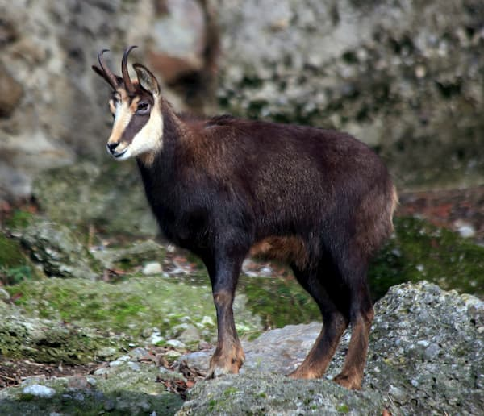
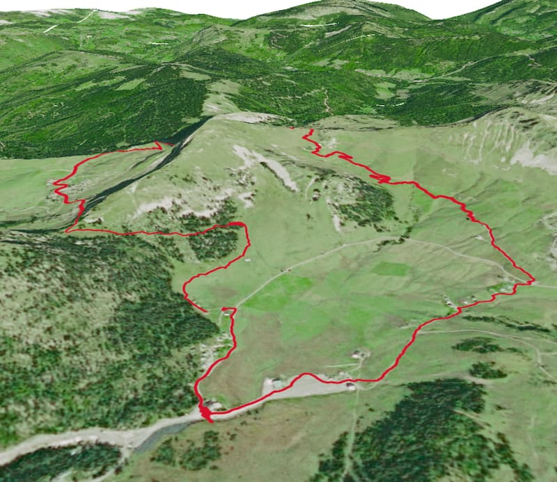
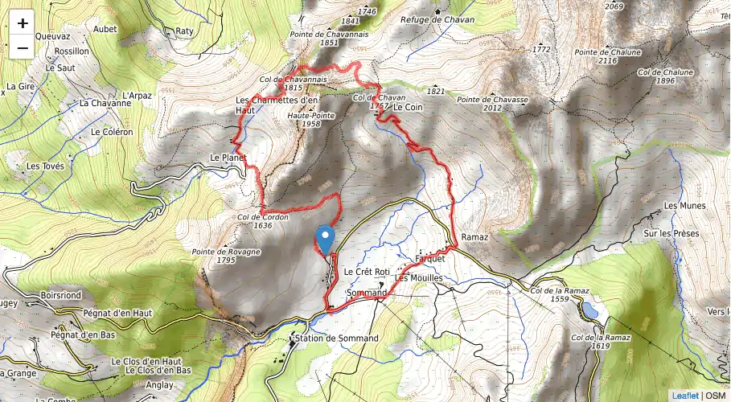
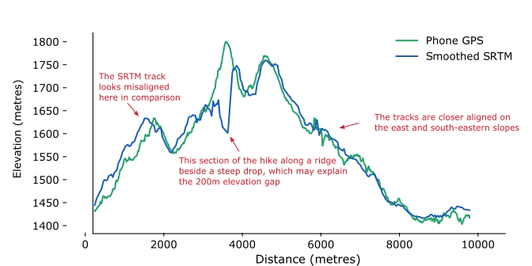

Analyzing a post lockdown hike
Posted on Sun 17 May 2020 in General
Going without something for a long time can sharpen your sense of appreciation for it. Since France announced lockdown measures on 17th March, my experiences with the physical world outside of my apartment have been limited to trips to buy groceries and short walks around the outside of Chateau Voltaire. Yesterday, as the restriction began to ease, I was finally able to go for a short hike in Sommand in Haute-Savoie.
The hike itself only took a couple of hours and was not difficult - although my lockdown conditioned muscles argue differently with me this morning. Below are a static 3D map and dynamic map of the hike along with some pictures of the views and local wildlife.

A Chamois (Credit: Wikipedia Manfred Werner)
The route
We parked in the small parking area past La Matafan, You can see it in the map below, the section where the loop doesnt quite join up.

3D render of the route using QGIS

Click to see the full interactive map
You’ll notice we took a long route on the way back to the car. That was to get ice-cream :)
Elevation profiles
The trails in the above maps are from our recorded route, logged in the wonderful OsmAnd Android app. The GPS in my basic android phone supposedly uses A-GPS, GLOSNASS and BDS (but interestingly not Galileo) to log coordinates, so should be reasonably accurate.
I was curious as to how the elevation readings of my phone compare to other methods, such as calculating it from position on a DEM (Digital Elevation Model) such as the SRTM.

Comparing the two elevation sources shows some interesting results. While the tracks are quite well aligned for the section of trip where we descend on the eastern, south-eastern slope of the mountain, there is a big discrepancy in the section leading up to the highest point of our hike.